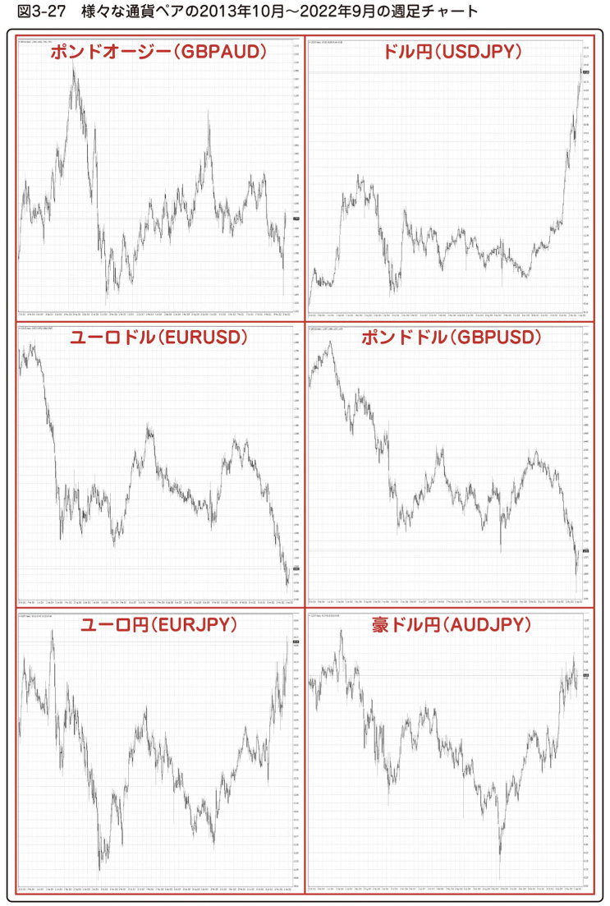

3－21_【FX】リオン式 Zone トレード準備編
ここからは「リオン式 Zone トレード」とは何か、本書の核となる部分について解説して行きます。
Zone トレードの考え方の根底にあるのは「値動きはレンジ相場とトレンド相場を繰り返す」というものです。
図3-27 は ポンドオージー（GBPAUD） をはじめ、
をはじめ、
様々な通貨ペアの 2013年 10月 から 2022年 9月 までの 長期週足チャートです。

図3-27 : 様々な通貨ペアの2013年 10月～2022年 9月の週足チャート
レートは2国間の力関係で決まって行きます。 強い国の通貨が上昇し、弱い国の通貨は下落します。
その上昇や下落の間にも、値動きが一定の値幅内で揉み合っている時期があるのは分かりますよね。
一般的に為替相場の 約 70% はそういったレンジ相場、残りの 約 30%が一方通行の上昇 や 下落が続くトレンド相場と言われています。
約 70%のレンジ相場は、トレンドが出ていなくて取引しづらいから見送りという判断もあります。
でも、「トレンド と トレンドを、レンジが繋いでいる」のだから、リオン式 Zone トレードではレンジ相場の頭から次のトレンド開始を狙って行きます。
そうすると、成功した場合、
「レンジの値幅 + 次に始まったトレンドの終わり」
までを獲ることが出来ます。
私が目指しているのは常にそこです。